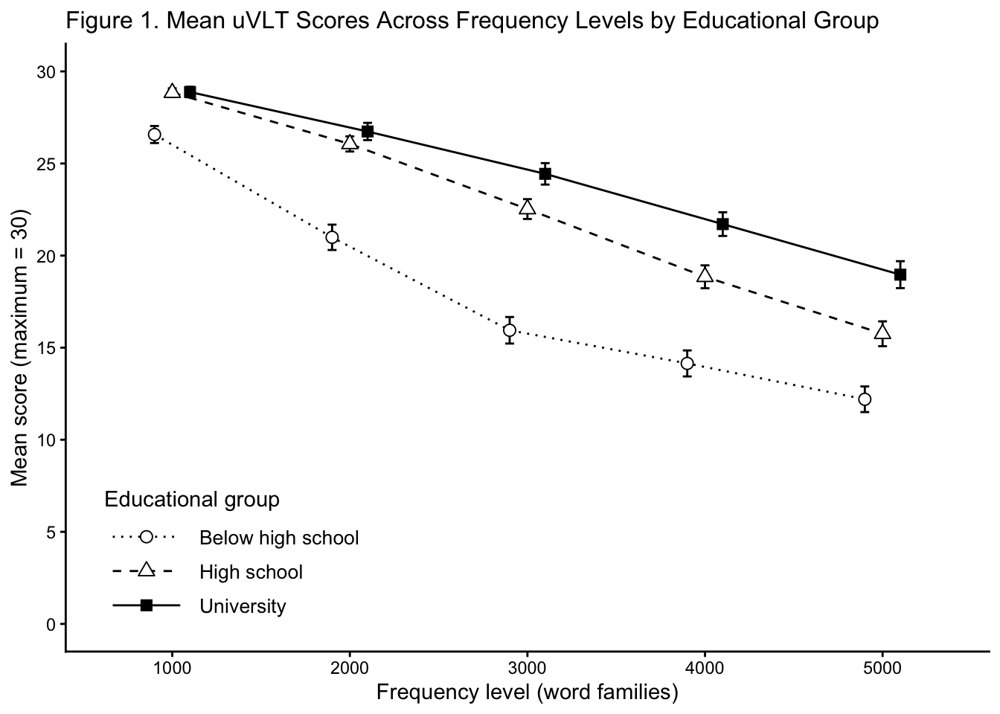
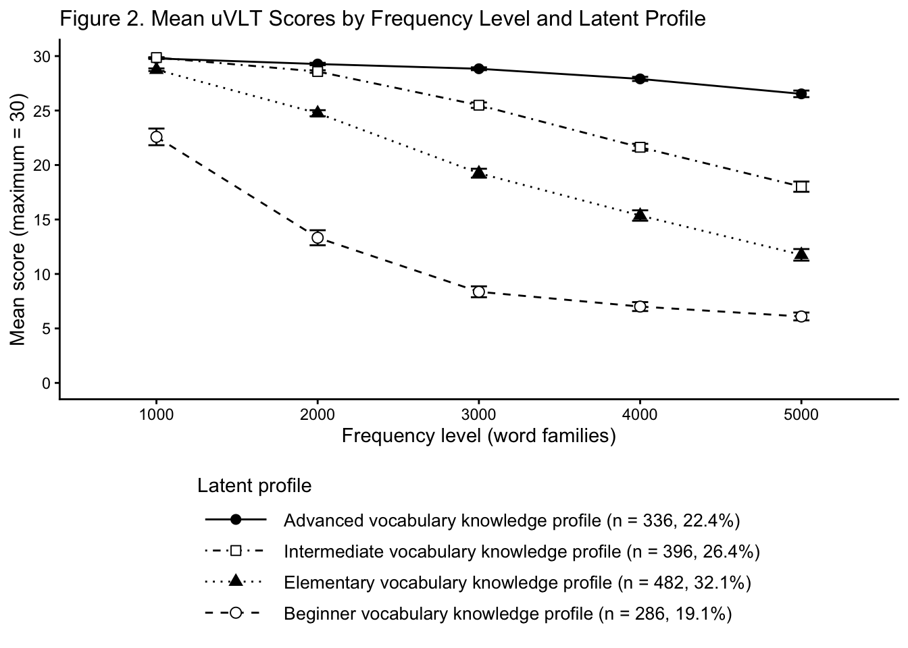
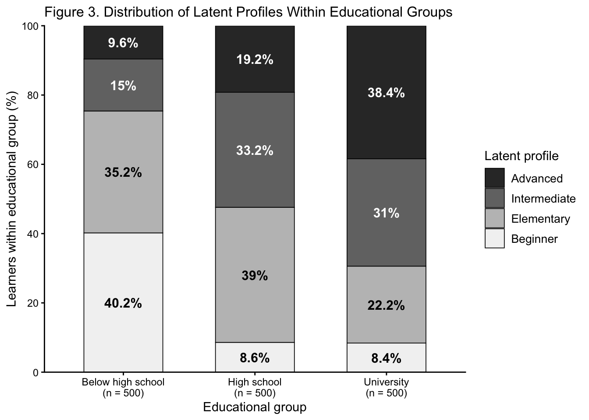

Data Vis Project
Story Summary
Second language (L2) English vocabulary knowledge is expected to increase as learners progress through formal education. The Updated Vocabulary Levels Test (uVLT) measures learners’ knowledge of English words across five frequency levels, from the most frequent 1000 word families to the most frequent 5000 word families.
At the group level, the uVLT data appear to show a straightforward educational progression: learners at higher educational stages generally perform better across frequency levels. However, these averages tell only part of the story. When learners are grouped according to their patterns of vocabulary knowledge across the five frequency levels, four distinct lexical profiles emerge, revealing substantial differences hidden by educational averages.
More importantly, these profiles do not map neatly onto educational stages. Less advanced profiles remain among university learners, while some learners below high school display advanced profiles. Formal education is therefore associated with stronger vocabulary knowledge, but educational level alone does not adequately characterize what individual learners know.
The visualizations move from the educational progression, to the variation hidden beneath group averages, and finally to the overlap between vocabulary profiles and educational stages.
Version A Scientific Article
Beyond Educational Level: Latent Profiles of Receptive Vocabulary Knowledge Across Frequency Levels
Participants
The data were collected from 1500 English as a foreign language (EFL) learners in China who completed the Updated Vocabulary Levels Test (uVLT). Participants represented three educational groups: learners with less than a high school education (n = 500), those with a high school education or equivalent (n = 500), and those with a four-year college degree (n = 500).
Measure
Vocabulary knowledge was assessed using the Updated Vocabulary Levels Test (uVLT), a frequency-based measure of English vocabulary knowledge. The test assesses knowledge at five frequency levels, representing the 1000, 2000, 3000, 4000, and 5000 most frequent word families in English. Each level contains 30 items.
Analysis
The analysis examined vocabulary knowledge from two perspectives. First, mean uVLT scores across the five frequency levels were compared across the three educational groups. Second, learners were classified according to their patterns of performance across the five frequency levels using latent profile analysis (LPA). The resulting four lexical profiles—beginner, elementary, intermediate, and advanced—were then compared across educational groups to determine whether patterns of lexical knowledge corresponded closely to educational stage.
Results and Discussions
As Figure 1 shows, mean uVLT performance showed a general educational progression, with learners at higher educational stages tending to achieve higher scores across the five frequency levels. Across educational groups, scores also declined from the 1000- to the 5000-word frequency level, reflecting weaker knowledge of progressively lower-frequency vocabulary.
These group-level patterns, however, describe only the average learner within each educational group. Some variation among learners at the same educational stage is expected, but group means do not show the extent of this variation or whether learners exhibit systematically different patterns of lexical knowledge across frequency levels.
Latent profile analysis (LPA) provided a different perspective by grouping learners according to similarities in their performance across the five vocabulary frequency levels, rather than their educational stage. Four profiles emerged, as shown in Figure 2, ranging from beginner to advanced patterns of lexical knowledge. This suggests that the variation within educational groups is not simply random individual variation but can be characterized by distinct patterns of lexical knowledge.

The next question is how closely these profiles correspond to educational stage. Although some overlap across educational groups is expected, the extent of this overlap indicates how well educational stage differentiates learners with different patterns of lexical knowledge. Examining the distribution of the four profiles across educational groups therefore provides a more detailed picture of the relationship between formal education and vocabulary knowledge.

As expected, Figure 3 shows more advanced profiles became more common at higher educational stages. However, all four profiles were represented in each educational group, indicating substantial variation in lexical knowledge among learners at the same educational stage.
Version B: Accessible / Dynamic Outlet
What a vocabulary test shows about education and learning patterns
We might expect language learners at higher educational stages to have stronger English vocabulary knowledge. We would also expect language learners to know more common words better than less common ones, because higher-frequency words are encountered more often and are generally learned earlier.
But how well do these expectations match what learners actually know? Do people with more education generally know more English words? And how much does it matter whether those words are common or less common?
To find out, we looked at vocabulary test results from 1500 English learners in China with different educational backgrounds. The test covers five groups of words, ranging from the 1000 most common word families in English to the 5000 most common.
We start with the overall picture: How does vocabulary knowledge vary by educational stage and word frequency?
How to read the charts
The test groups words by how common they are. The 1000 level contains the 1000 most common English words. The 2000 level contains the next 1000, and so on up to the 5000 level. Each level has 30 test items, so a score of 30 means a learner knew every word tested at that level. Hover over any point or bar to see the exact numbers.
More schooling, more words
Almost every learner knows the most common English words. At the 1000 level, university learners score only about 2 points higher than learners below high school, out of 30.
The picture changes as the words become rarer. Scores drop for every group, but they drop fastest for learners below high school. By the 5000 level, the gap between the two groups has grown to about 7 points.
Chart summary: Scores fall for all three education groups as words become rarer. Learners below high school drop the fastest, so the gap between the groups is small for common words and large for rarer words.
So education matters. But averages can hide a lot. Within each education group, some learners may know far more words than others.
Education is not the whole story
To look past the averages, we grouped the same learners a second way. Instead of their education, we looked at the shape of what they know: where their scores stay high, and where they start to drop.
A statistical method called latent profile analysis found four groups of learners with similar score patterns. We call them vocabulary profiles. Use the buttons above the chart to look at one profile at a time.
Chart summary: The four profiles differ in where scores drop. Advanced learners stay high at every level, while Beginner learners drop sharply after the most common 1000 words.
Each profile tells a different learning story:
- Advanced (22% of learners) know almost every word tested. Even at the 5000 level, they still know about 27 of 30 words.
- Intermediate (26%) know nearly all common words. Their scores then fall steadily to about 18 of 30 at the 5000 level.
- Elementary (32%) start strong but drop soon after the first 1000 words. They reach about 12 of 30 at the 5000 level.
- Beginner (19%) know about 23 of 30 of the most common words. Beyond that, their scores fall quickly, to about 13 of 30 at the 2000 level and about 6 at the 5000 level.
The same education level, very different vocabularies
If education fully decided a learner’s vocabulary, each education group would contain mostly one profile. University learners would all be Advanced, and learners below high school would all be Beginners.
That is not what we found. Click a profile to see how it spreads across the three groups.
Chart summary: All four profiles appear in all three education groups. The Advanced share is larger in groups with more education, but no group consists of a single profile.
Learners at the same educational level can have very different vocabulary profiles. At university, for example, 38% of learners are in the Advanced profile, but about 30% are still in the Elementary or Beginner profiles. The same variation appears below high school: while 40% are Beginners, about 25% reach the Intermediate or Advanced profiles.
So, although more advanced profiles are more common at higher educational levels, education alone does not tell us what an individual learner’s vocabulary knowledge looks like.
What this means
A learner’s education level gives only a rough guide to their English vocabulary. Two learners with the same schooling can know very different sets of words.
For teachers, this has a practical message. Education level alone cannot tell you which words a learner still needs. A short vocabulary test can, because it shows exactly where each learner’s knowledge starts to drop.
Data Source Note
This analysis uses a subset of the data from my master’s thesis.